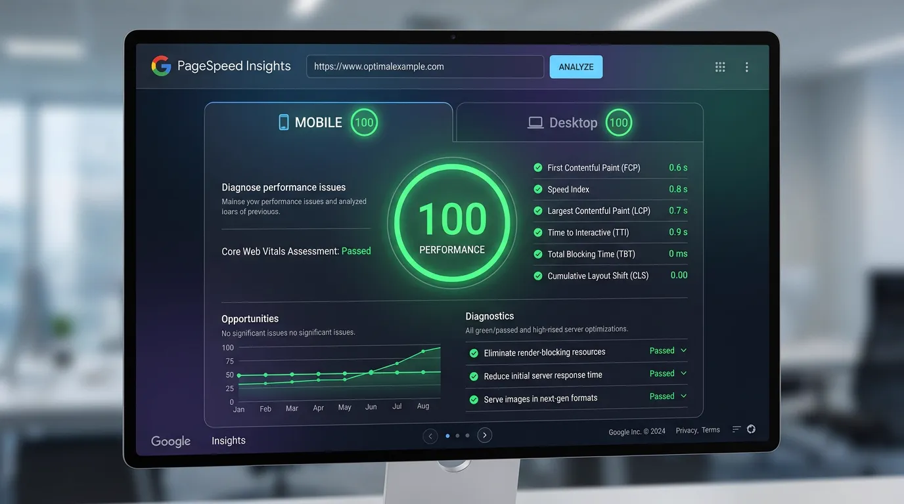
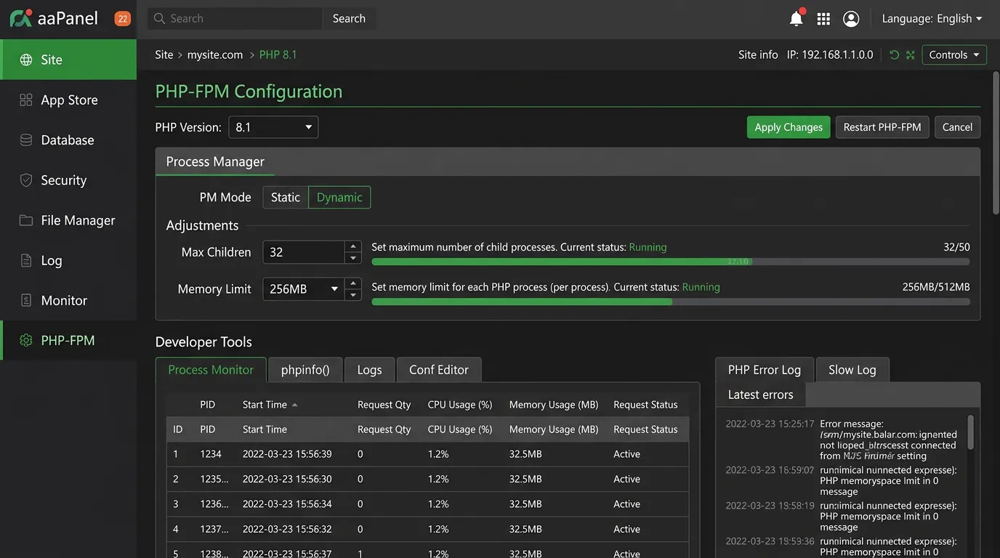
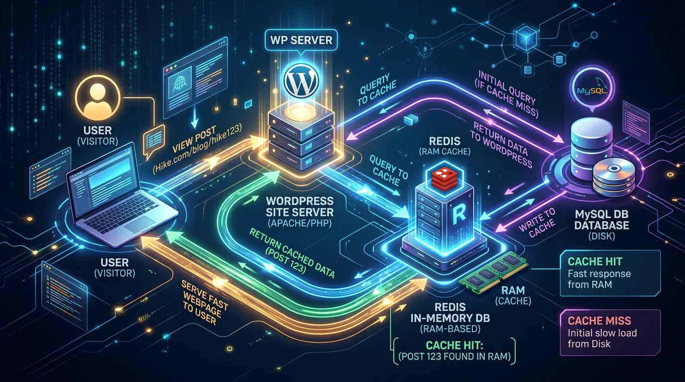

Một website WordPress chạy trên VPS có thể cực kỳ nhanh, nhưng cũng có thể vô cùng chậm chạp nếu bạn giữ nguyên mọi cấu hình mặc định (default). Khác với Shared Hosting nơi nhà cung cấp đã cấu hình sẵn mọi thứ, trên VPS, bạn có toàn quyền kiểm soát nhưng đồng thời phải tự tay thiết lập bộ nhớ đệm (cache) và tinh chỉnh các thông số kỹ thuật.
Trong bài viết này, các chuyên gia hệ thống tại TeamDevDesign sẽ bật mí cho bạn quy trình tối ưu VPS cho WordPress từ gốc đến ngọn. Chúng ta sẽ can thiệp trực tiếp vào Nginx, PHP-FPM, MySQL và cài đặt Redis Object Cache để giúp website của bạn đạt 100 điểm Google PageSpeed và chịu tải hàng chục nghìn lượt truy cập mỗi ngày.
Khi bạn vừa cài đặt WordPress trên VPS aaPanel, cấu hình mặc định của Nginx và PHP thường được thiết kế để "chạy được trên mọi cấu hình phần cứng" chứ không phải là "chạy nhanh nhất".
WordPress là một mã nguồn động (Dynamic CMS). Mỗi khi có người truy cập, nó phải chạy các tập lệnh PHP, kết nối vào MySQL để lấy dữ liệu bài viết, giao diện, plugin rồi mới trả về mã HTML cho trình duyệt. Quá trình này tốn rất nhiều CPU và RAM. Nếu không có cơ chế Cache (Bộ nhớ đệm), một VPS 2GB RAM có thể bị "sập" (Crash) chỉ với 100 người online cùng lúc.

PHP-FPM (FastCGI Process Manager) là thành phần chịu trách nhiệm thực thi các đoạn mã PHP của WordPress. Để tối ưu, bạn cần điều chỉnh số lượng "công nhân" (workers) xử lý yêu cầu dựa trên dung lượng RAM của VPS.

OPcache giúp lưu trữ các tập lệnh PHP đã được biên dịch vào RAM, giúp các lần gọi sau không phải biên dịch lại mã nguồn từ ổ cứng.
opcache.enable=1
opcache.memory_consumption=128
opcache.interned_strings_buffer=8
opcache.max_accelerated_files=10000
opcache.revalidate_freq=60Mặc định MySQL sử dụng bộ nhớ rất dè sẻn. Nếu VPS của bạn có RAM từ 2GB trở lên, hãy cấp thêm RAM cho MySQL (đặc biệt là InnoDB Buffer Pool) để tăng tốc độ truy vấn cơ sở dữ liệu.
Trong aaPanel:
Nếu OPcache tăng tốc PHP, thì Redis tăng tốc độ truy xuất dữ liệu từ MySQL. Redis lưu trữ các kết quả truy vấn (Query) thường xuyên vào RAM. Lần tới khi WordPress cần dữ liệu đó (ví dụ menu web, danh sách bài viết), nó sẽ lấy trực tiếp từ RAM trong vòng vài mili-giây thay vì hỏi MySQL mất hàng trăm mili-giây.

Nguyên nhân số 1 làm chậm website thường là do hình ảnh có dung lượng quá lớn (JPG/PNG). Thay vì nén ảnh bằng tay, bạn có thể thiết lập VPS tự động chuyển đổi ảnh sang định dạng WebP thế hệ mới.
wp-content/uploads lên các dịch vụ CDN (Content Delivery Network) như Cloudflare hoặc BunnyCDN để giảm tải hoàn toàn băng thông cho VPS.Rất ít. Redis quản lý bộ nhớ cực kỳ thông minh. Với một trang WordPress nhỏ và vừa, Redis chỉ tốn khoảng vài chục MB RAM nhưng lại giảm tải cho CPU tới 50%.
Do OPcache đã lưu lại mã máy (bytecode) của file PHP cũ. Bạn cần khởi động lại dịch vụ PHP-FPM trong aaPanel hoặc chờ hết thời gian thiết lập (thường là 60s) để file mới được cập nhật.
Cài đặt Redis Object Cache là phương pháp đáng giá nhất, đặc biệt đối với các trang thương mại điện tử (WooCommerce), vì nó giảm trực tiếp số lượng truy vấn lặp lại xuống database.
Bằng việc cấu hình lại PHP-FPM, MySQL, bật OPcache và đặc biệt là áp dụng Redis Object Cache, VPS của bạn giờ đây đã sẵn sàng gánh vác lượng traffic khổng lồ mà không hề bị nghẽn (bottleneck). Một website phản hồi nhanh dưới 1 giây không chỉ làm khách hàng hài lòng mà còn là yếu tố tiên quyết giúp bạn leo Top 1 Google dễ dàng hơn.
Với 3 bài viết chuyên sâu về việc cài đặt, bảo mật và tối ưu VPS, bạn đã nắm trong tay những kiến thức chuẩn mực nhất của một System Admin. Tuy nhiên, liệu VPS có phải là lựa chọn duy nhất? Và khi nào thì nên dùng Hosting truyền thống? Hãy cùng TeamDevDesign tìm lời giải trong bài viết phân tích toàn diện So sánh Hosting và VPS: Doanh nghiệp của bạn cần gì? nhé!